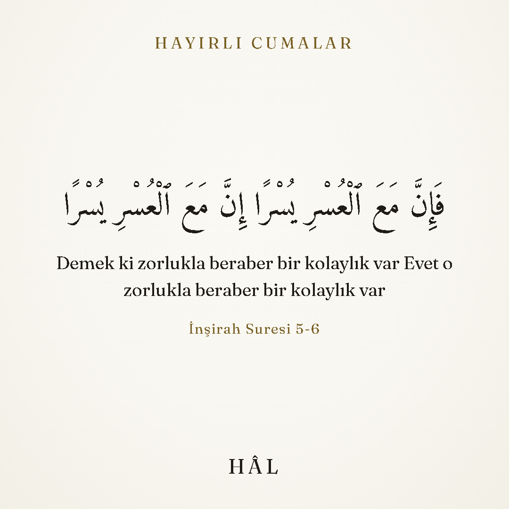
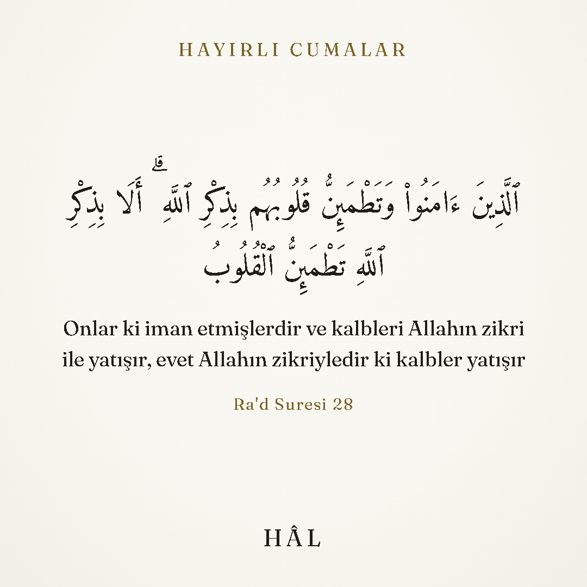
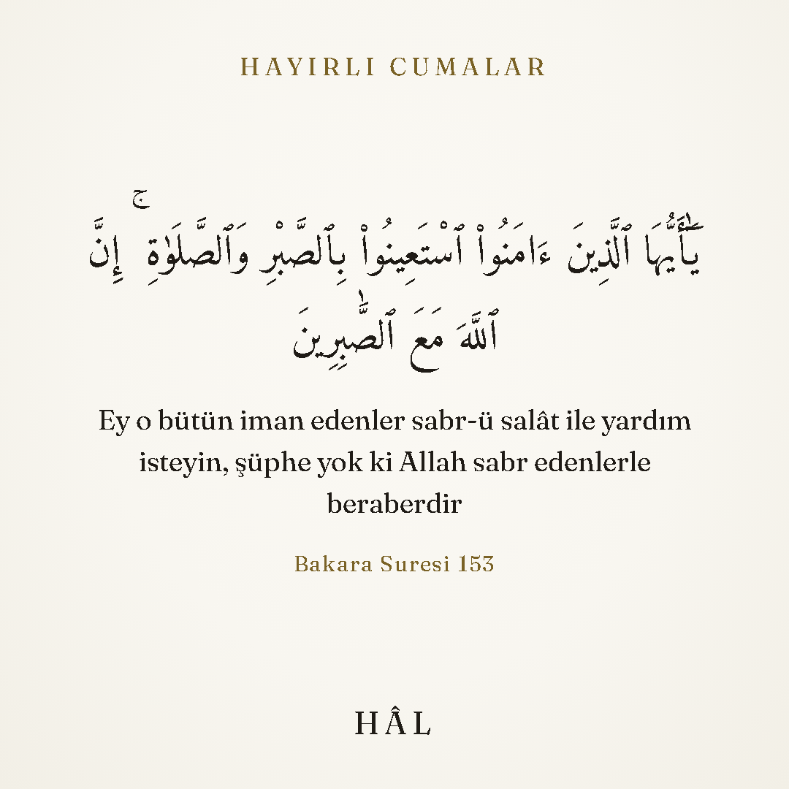
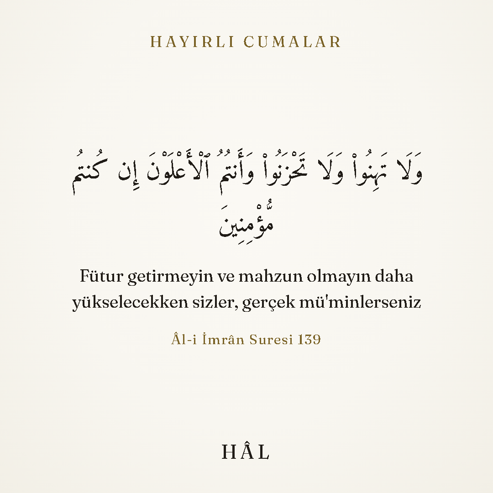
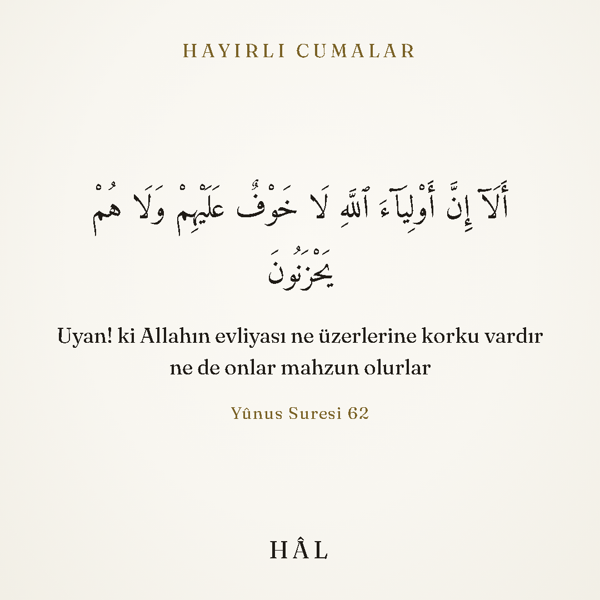
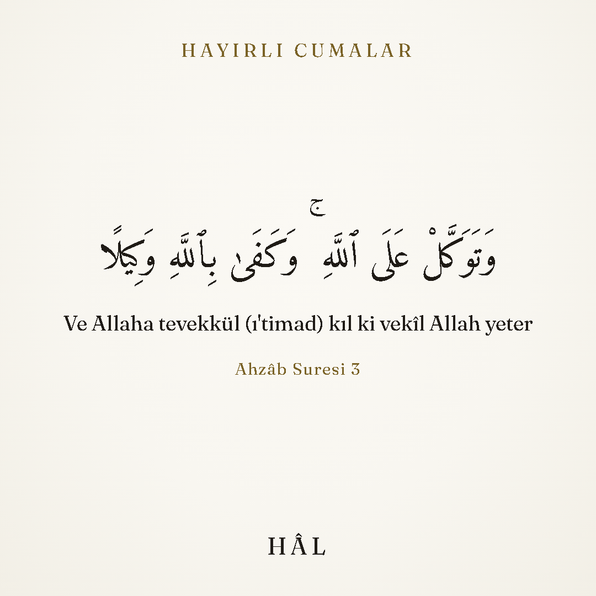
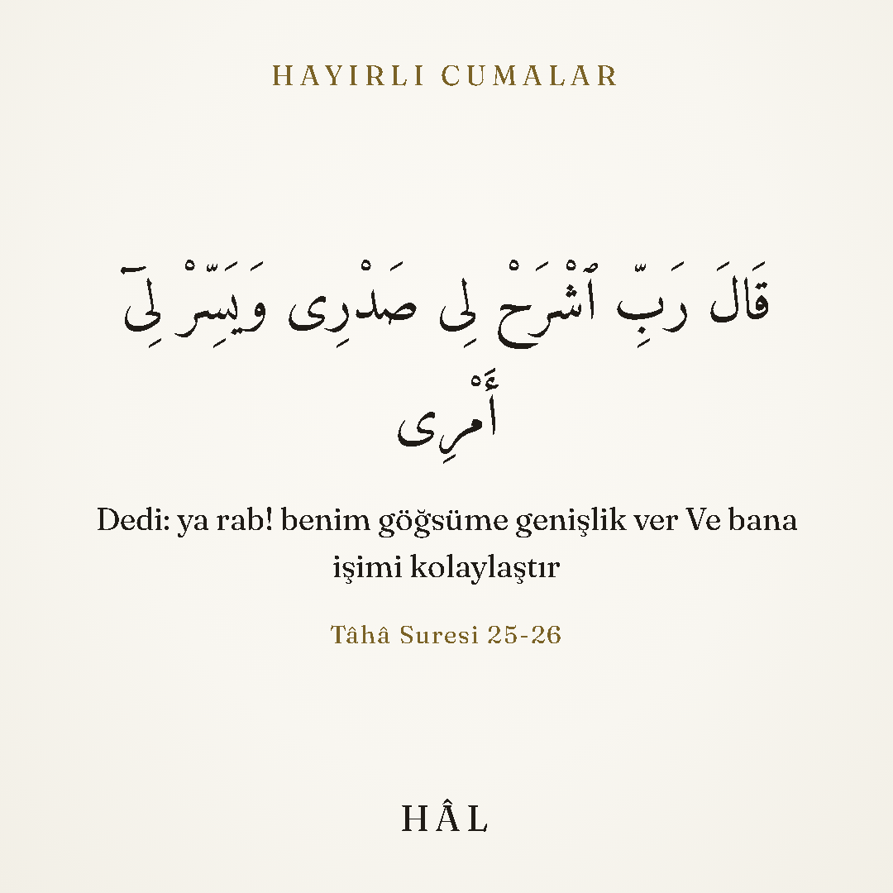
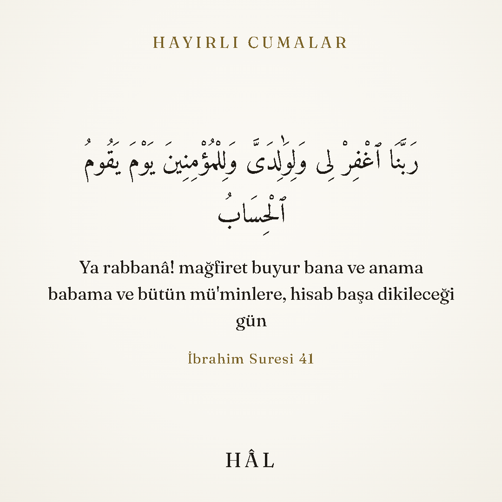
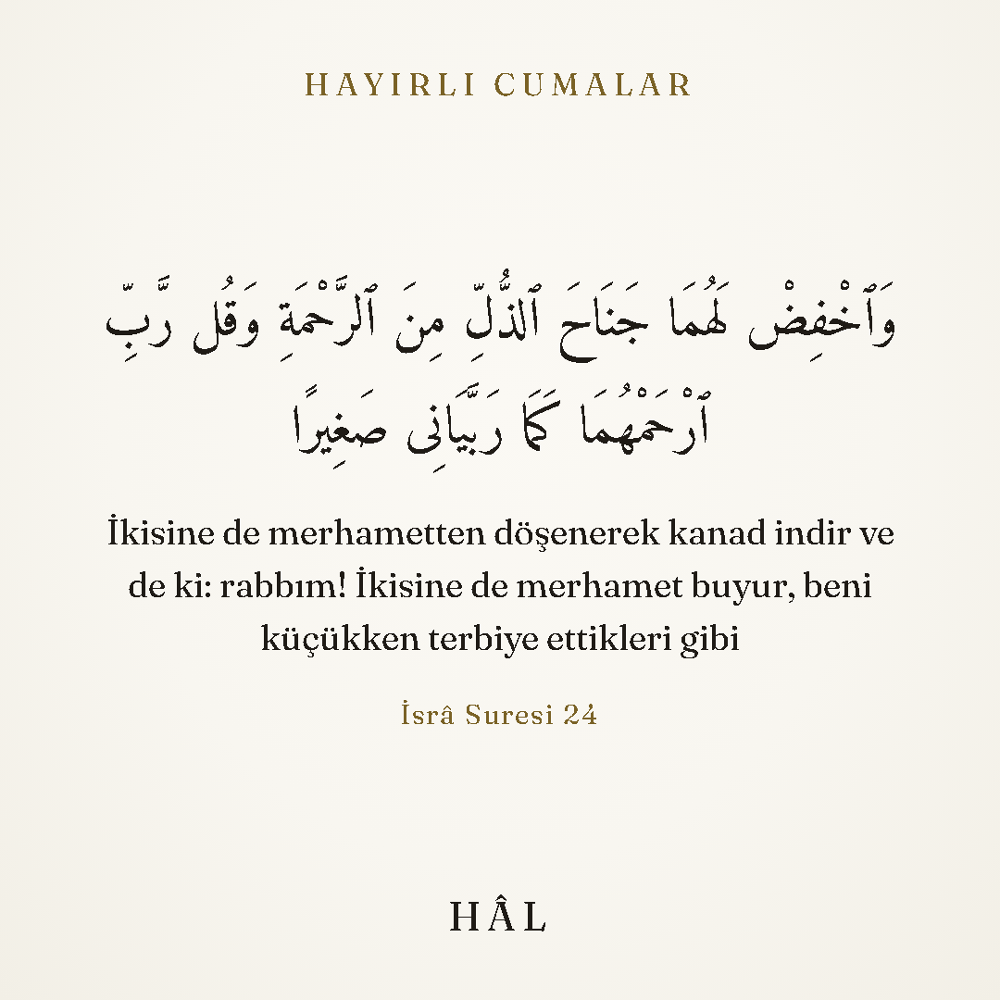
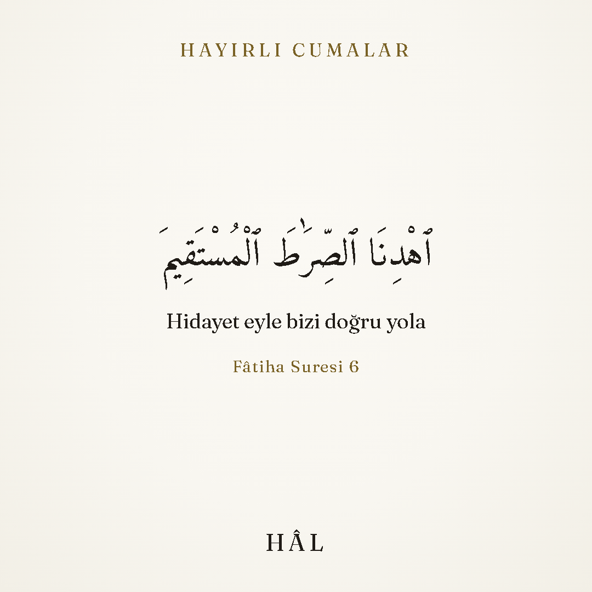

Ayetli Cuma mesajları
Cuma günü sevdiklerine göndermek için Arapçası ve Elmalılı mealiyle ayet ve dua kartları. Görseli indir ya da doğrudan WhatsApp'ta gönder.




















Hâline uygun ayet ve dualar, HÂL uygulamasında Arapçası, okunuşu, meali ve kaynağıyla bir arada.
Arapça: Tanzil Uthmani (tanzil.net, CC BY 3.0, değiştirilmeden). Meal: Elmalılı Hamdi Yazır, Hak Dini Kur'an Dili, Eser Neşriyat 1979. HÂL bir tefsir ya da fetva kaynağı değildir; dini hüküm vermez. Amacı, günün içinde kısa bir an durup okumana eşlik etmektir.